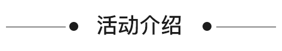
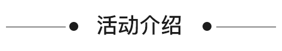

最美校园活动

开始时间 : 9月22日12:00点整
结束时间 : 10月10日12:00点整

- 仅通过PU账号登陆投票的用户享有最终奖金池分配奖励资格
- 学校奖金池封顶数值为50万点
- 奖金池金额由系统计算得出，以PU币形式发放，PU币：人民币=1:1

-
{{school.votes}}票

长按扫我关注参与投票
投票成功
最美校园活动
开始时间 : 9月22日12:00点整
结束时间 : 10月10日12:00点整

{{school.votes}}票
长按扫我关注参与投票
投票成功